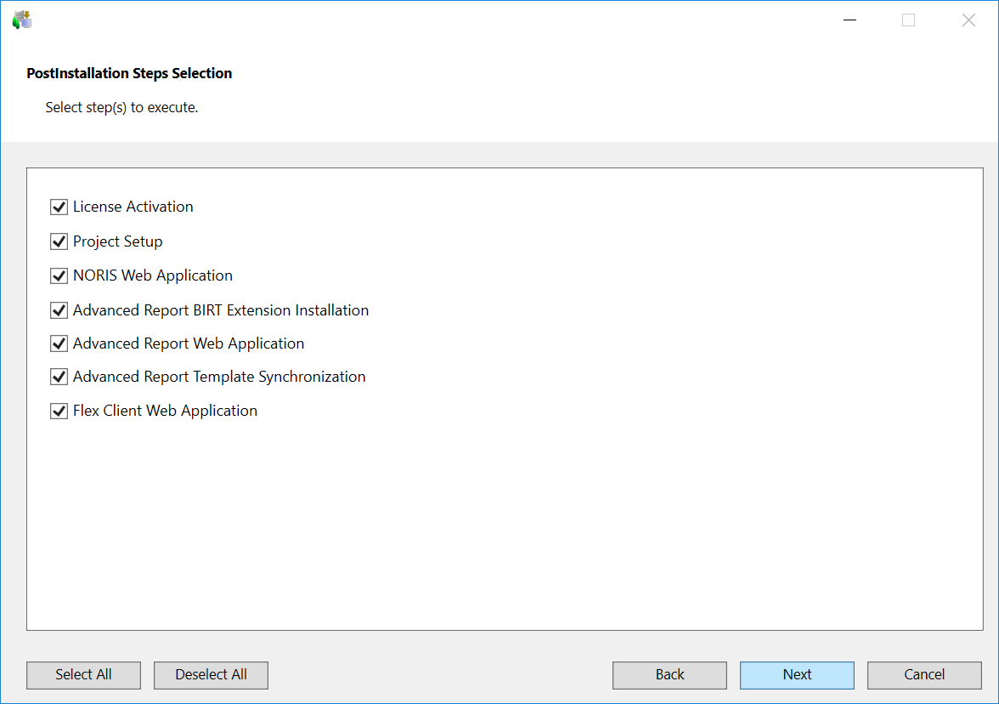

Verify the Post-Installation Steps Selection
- The Post-Installation Steps Selection dialog box displays listing the post-installation steps for the SetupType = Server for the
- LicenseActivation, if available at the path …\InstallFiles\GMS\PostInstallation
- Project setup for the mandatory extension SMC as well as for the selected extensions at the path ...\InstallFiles\EM\[EMName]\PostInstallation.
During installation of the platform or extension, the Post Installation folder is copied to..\GMSMainProject and the post installation steps are executed from ..\GMSMainProject\PostInstallation\GMS or ..\GMSMainProject\PostInstallation\EM\[EM Name].
NOTE: Only those post-installation steps, for which the tag is configured as Execute = AskUser in the [GMS/EMName]PostInstallationConfig.txt file, are displayed in the PostInstallation Steps Selection dialog box. - Deselect the post-installation step that you do not want to execute.
NOTE: For a post-installation step, ifExecute = Alwaysis configured in the [GMS/EM Name]PostInstallationConfig.txt file, then that post-installation step is not listed in the PostInstallation Steps Selection dialog box. However, such steps are directly listed in pending list of the Ready to Install the Program dialog box.
